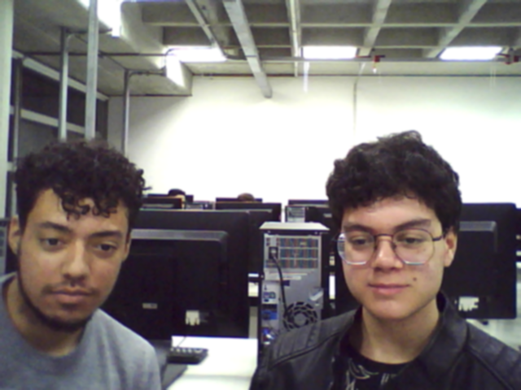
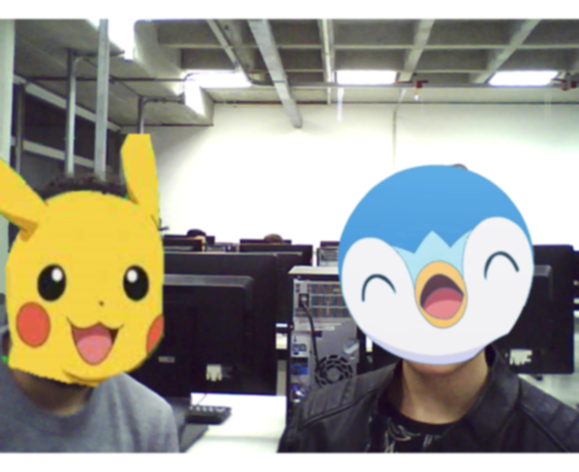

Introdução
O experimento a seguir busca estudar a aplicação da filtragem e processamento de imagens através de linguagem de programação. Os filtros utilizados nesse experimento serão aqueles disponíveis pela biblioteca do OpenCV, sendo eles o filtro 2D Convolution, o Averaging blur, o Gaussian blur, o Median Blur e o Bilateral Filter, todos na resolução 5x5.
Objetivos
- Filtragem de imagens
- Estudar a teoria e implementar os códigos deste tutorial para o seu entendimento.
- Aplicar os conhecimentos de filtragem nas fotos obtidas na parte 3 do relatório 1
Fundamentos básicos
O processamento de imagens , muitas das vezes, é a primeira etapa em uma aplicação de visão computacional, consistindo da definição de uma nova imagem a partir de uma outra já existente. Tais imagens podem ser descritas como funções e matrizes de valores inteiros, onde programas podem ser criados para alterar esses valores.
O processamento de imagem é muito útil, por exemplo, para a remoção ou diminuição de ruídos, sendo os mais comuns destes o Salt and pepper (pontos brancos e pretos na imagem), o impulse (pontos brancos na imagem) e o gaussiano (variações de intensidade).
Para reduzir os ruídos, alguns tipos de filtros podem ser utilizados, como o filtro de média, que realiza a média dos valores da matriz que compõe uma imagem, o filtro de correlação cruzada, que implementa um Kernel à imagem que se deseja filtrar que permite índices negativos, o filtro Gaussian, que dá menos peso aos pixels distantes do centro da janela, e o filtro de mediana, onde o Kernel é invertido horizontalmente e verticalmente antes de ser aplicado.
Cada filtro se mostra mais adequada para determinado tipo de ruído.
Materiais e métodos
- Ubuntu
- Miniconda
- Python
- OpenCV
Parte 1
A partir das imagens obtidas na parte 3 do relatório 1, foram aplicados os filtros descritos abaixo utilizando as funções disponíveis no site https://docs.opencv.org/4.x/d4/d13/tutorial_py_filtering.html. Também foi utilizado o comando img = cv.cvtColor(img, cv.COLOR_BGR2RGB) para ajustar a coloração na saída das imagens.
2D Convolution
Aqui foi utilizado o primeiro algoritmo disponibilizado pelo site do OpenCV, onde os parâmetros do imread foram modificados para receber a imagem desejada e foi acrescentada a função waitKey para que o programa registrasse a tecla pressionada e imWrite para salvar a imagem filtrada.

Averaging blur
Aqui foi utilizado o segundo algoritmo disponibilizado pelo site do OpenCV, onde os parâmetros do imread foram modificados para receber a imagem desejada e foi acrescentada a função waitKey para que o programa registrasse a tecla pressionada e imWrite para salvar a imagem filtrada, assim como no filtro anterior.

Bilateral Filter
Aqui foi utilizada a função cv.bilateralFilter no lugar da função cv.blur do algoritmo do Averaging blur (já modificado), além disso, também foi alterado o nome da saída da imagem na função imWrite.

Gaussian blur
Aqui foi utilizada a função cv.GlaussianBlur no lugar da função cv.blur do algoritmo do Averaging blur (já modificado), além disso, também foi alterado o nome da saída da imagem na função imWrite.

Median Blur
Aqui foi utilizada a função cv.medianBlur no lugar da função cv.blur do algoritmo do Averaging blur (já modificado), além disso, também foi alterado o nome da saída da imagem na função imWrite e o "blur" da função imshow foi trocado por "median".

Parte 2
Original
Aqui foi utilizada o algoritmo do relatório 1 (parte 2 - C) para salvar a imagem obtida.

2D Convolution
Aqui foi adicionada a variavel Kernel e a dst com a função filter2D, sendo necessário alterar os parâmetros da linha de baixo para receber a variável dst. Além disso, foi acrescentado o "from matplotlib import pyplot as plt" para importar as funções de filtro.

Averaging blur
Aqui foi removida a variável Kernel e acrescentada a função blur, sendo necessário alterar os parâmetros do imshow para receber blur.

Bilateral Filter
Aqui foi acrescentada a função bilateralFilter, sendo necessário alterar os parâmetros do imshow para receber blur.

Gaussian blur
Aqui foi acrescentada a função GaussianBlur, sendo necessário alterar os parâmetros do imshow para receber blur.

Median Blur
Aqui foi acrescentada a função medianBlur, sendo necessário alterar os parâmetros do imshow para receber median.

Resultados e análise
PARTE 1
Imagens originais obtidas na parte 3 do relatório 1. Pode se notar os ruídos ocasionados pela baixa qualidade da câmera, provocando a falta de nitidez.


2D Convolution
Utilizando o 2D Convolution nota-se que a imagem perdeu ainda mais definição, o que também é perceptivel no avatar direito, que ante estava muito mais nítido.

Bilateral Filter
Utilizando o Bilateral Filter nota-se que as imagens apresentam muito menos granulação, embora agora não apresentem muitos detalhes, o que é ruim para imagens complexas, como o rosto humano, mas bom para imagens com menos detalhes, como desenhos.

Gaussian blur
Assim como o filtro de 2D Convolution, o Gaussian não apresentou um bom resultado, onde ambas as imagens perderam mais definição.
 Median Blur
O resultado se assemelha ao Bilateral, embora ainda possa de notar um pouco de embaçamento e perda de definição.

Averaging blur
Este talvez tenha sido o filtro que apresentou pior resultado, embaçando muito as imagens e causando muita perda de qualidade em ambas.

PARTE 2
Original
Imagem original sem nenhum filtro.

2D Convolution
É possível notar que a definição da imagem piorou.

Averaging blur
Nota-se que não houve muita diferença entre o 2D convolution e o averaging blur.

Bilateral Filter
Assim como na parte 1, o filtro bilateral aqui suavizou o serrilhado da imagem, porém houve queda de definição.

Gaussian blur
A perda de definição foi menor do que nos dois primeiros filtros e os ruídos da imagem original foram apagados.

Median Blur
Esse filtro apresentou uma suavização melhor do que os outros, embora ainda com um pouco de perda de definição.

Conclusões e Comentários finais
Nesse experimento foram arbodados conceitos de filtragem e processamento de imagens onde foram utilizados cinco filtros difentes disponíveis na biblioteca do OpenCV. Foi notável a diferença nas imagens na parte 1, sendo igualmente expressíveis na parte 2, embora que em ambas as partes não foi apresentado uma melhora geral nas imagens, todos os filtros demonstram perda de qualidade embora ainda possam apresentar utilidade para outros contextos, como embaçamento de plano de fundo para destacar uma figura.